I am currently a final-year Ph.D. candidate at Intelligent Media Analysis Group (IMAG Lab), School of Computer Science and Engineering, Nanjing University of Science and Technology (NJUST), under the supervision of Prof. Jinshan Pan. I also serve as the founder of the low-level vision community platform. My research interests include image processing and computer vision, mainly focusing on image deraining and low-level vision problems. If you are interested in my research, please feel free to contact me (any question / suggestion / collaboration).
| 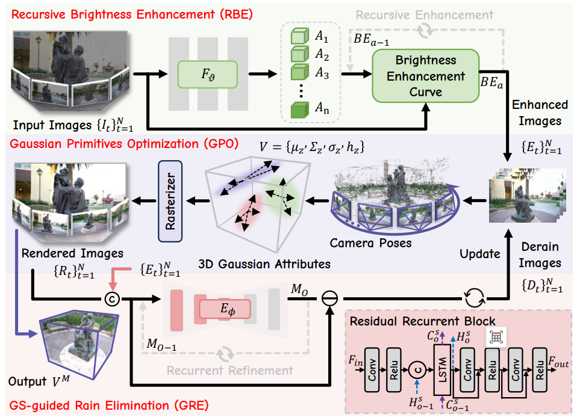 |
Rethinking Rainy 3D Scene Reconstruction via Perspective Transforming and Brightness Tuning
Qianfeng Yang^, Xiang Chen^, Pengpeng Li, Qiyuan Guan, Guiyue Jin, Jiyu Jin*
AAAI Conference on Artificial Intelligence (AAAI), 2026.
[Paper]
[Code]
|
| 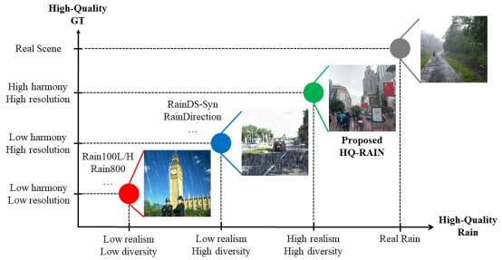 |
Towards Unified Deep Image Deraining: A Survey and A New Benchmark
Xiang Chen, Jinshan Pan*, Jiangxin Dong, Jinhui Tang
IEEE Transactions on Pattern Analysis and Machine Intelligence (TPAMI), 2025.
[Paper]
[Project]
[Code]
|
| 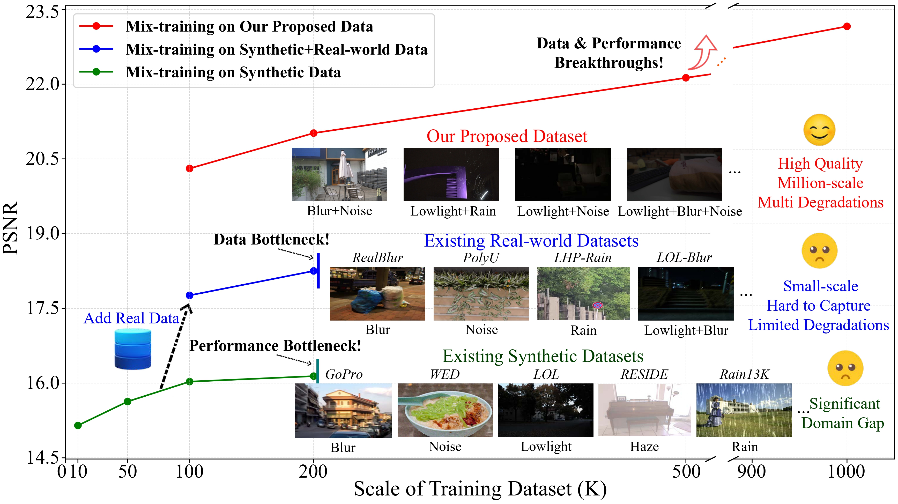 |
FoundIR: Unleashing Million-scale Training Data to Advance Foundation Models for Image Restoration
Hao Li^, Xiang Chen^, Jiangxin Dong, Jinhui Tang, Jinshan Pan*
IEEE International Conference on Computer Vision (ICCV), 2025.
[Paper]
[Code]
|
| 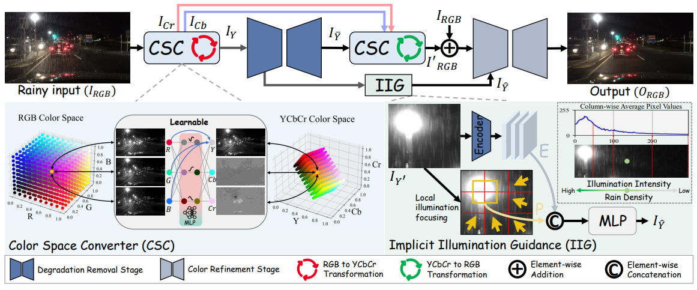 |
Rethinking Nighttime Image Deraining via Learnable Color Space Transformation
Qiyuan Guan^, Xiang Chen^, Jiyu Jin*, Guiyue Jin, Shumin Fan, Tianyu Song, Jinshan Pan
Annual Conference on Neural Information Processing Systems (NeurIPS), 2025.
[Paper]
[Code]
|
| 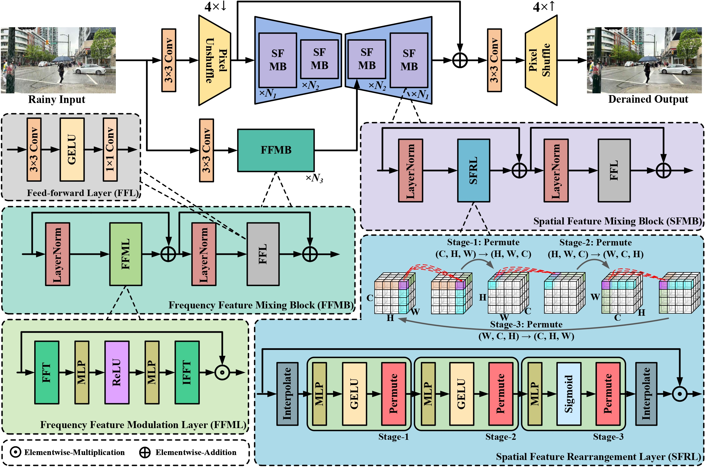 |
Towards Ultra-High-Definition Image Deraining: A Benchmark and An Efficient Method
Hongming Chen^, Xiang Chen^, Chen Wu, Zhuoran Zheng, Jinshan Pan, Xianping Fu*
IEEE Transactions on Multimedia (TMM), 2025.
[Paper]
[Code]
|
 |
DeRainGS: Gaussian Splatting for Enhanced Scene Reconstruction in Rainy Environments
Shuhong Liu, Xiang Chen, Hongming Chen, Quanfeng Xu, Mingrui Li*
AAAI Conference on Artificial Intelligence (AAAI), 2025.
[Paper]
[Project]
[Code]
|
| 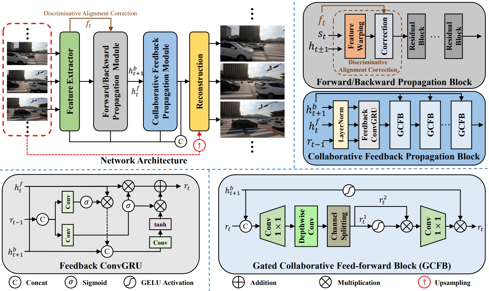 |
Collaborative Feedback Discriminative Propagation for Video Super-Resolution
Hao Li, Xiang Chen, Jiangxin Dong, Jinhui Tang, Jinshan Pan*
IEEE Transactions on Pattern Analysis and Machine Intelligence (TPAMI), 2025 (Minor Revision).
[Paper]
[Code]
|
| 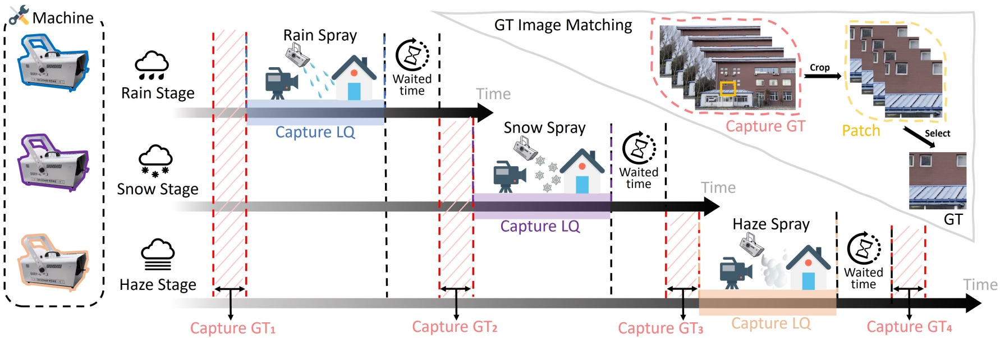 |
WeatherBench: A Real-World Benchmark Dataset for All-in-One Adverse Weather Image Restoration
Qiyuan Guan^, Qianfeng Yang^, Xiang Chen^, Tianyu Song, Guiyue Jin, Jiyu Jin*
ACM International Conference on Multimedia (ACM MM), 2025.
[Paper]
[Code]
|
| 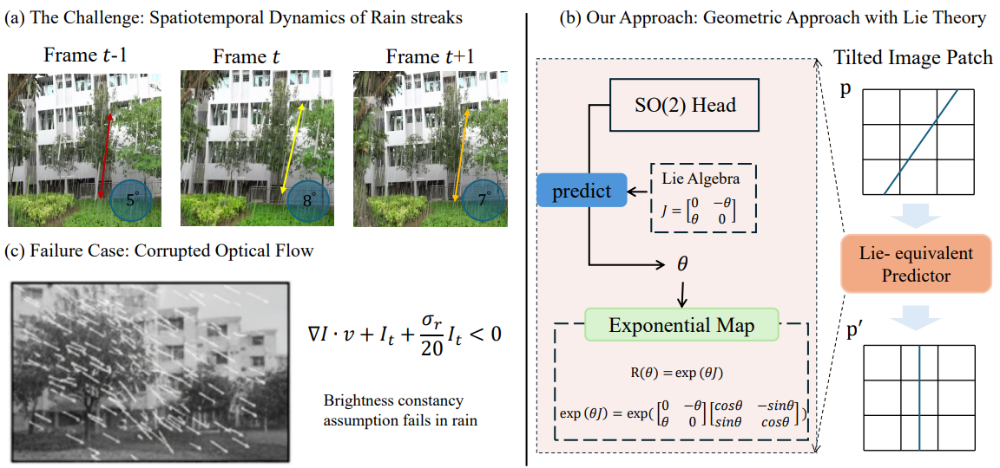 |
DeLiVR: Differential Spatiotemporal Lie Bias for Efficient Video Deraining
Shuning Sun, Jialang Lu, Xiang Chen, Jichao Wang, Dianjie Lu, Guijuan Zhang, Guangwei Gao, Zhuoran Zheng*
arXiv:2509.21719 (arXiv), 2025.
[Paper]
[Code]
|
| 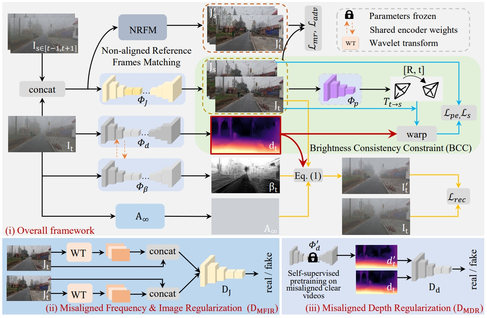 |
Depth-Centric Dehazing and Depth-Estimation from Real-World Hazy Driving Video
Junkai Fan, Kun Wang, Zhiqiang Yan, Xiang Chen, Shangbing Gao, Jun Li*, Jian Yang*
AAAI Conference on Artificial Intelligence (AAAI), 2025.
[Paper]
[Code]
|
| 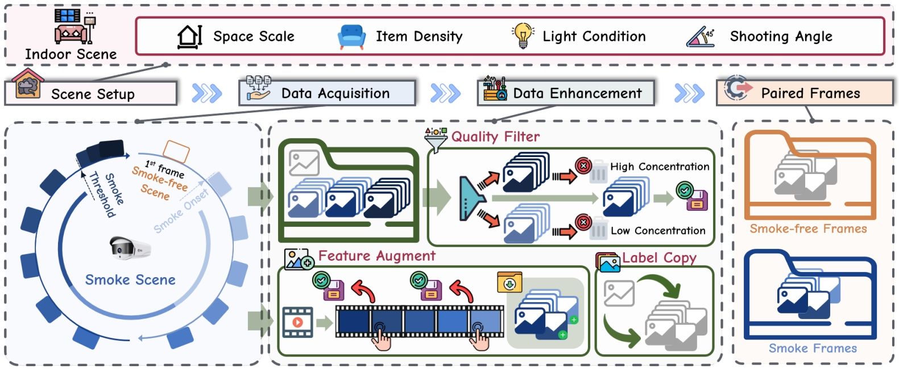 |
SmokeBench: A Real-World Dataset for Surveillance Image Desmoking in Early-Stage Fire Scenes
Wenzhuo Jin^, Qianfeng Yang^, Xianhao Wu^, Hongming Chen, Pengpeng Li, Xiang Chen*
ACM International Conference on Multimedia (ACM MM), 2025.
[Paper]
[Code]
|
| 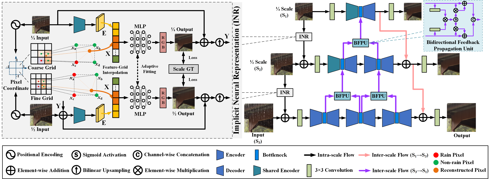 |
Bidirectional Multi-Scale Implicit Neural Representations for Image Deraining
Xiang Chen, Jinshan Pan*, Jiangxin Dong
IEEE Conference on Computer Vision and Pattern Recognition (CVPR), 2024.
[Paper][Code]
|
 |
Rethinking Multi-Scale Representations in Deep Deraining Transformer
Hongming Chen, Xiang Chen*, Jiyang Lu, Yufeng Li*
AAAI Conference on Artificial Intelligence (AAAI), 2024.
[Paper][Code]
|
| 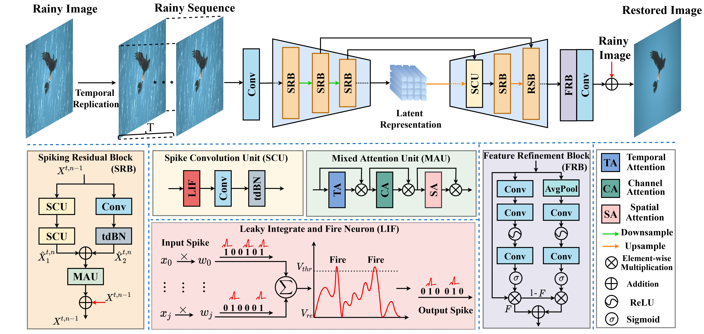 |
Learning A Spiking Neural Network for Efficient Image Deraining
Tianyu Song, Guiyue Jin, Pengpeng Li, Kui Jiang, Xiang Chen, Jiyu Jin*
International Joint Conference on Artificial Intelligence (IJCAI), 2024.
[Paper][Code]
|
 |
Learning A Sparse Transformer Network for Effective Image Deraining
Xiang Chen, Hao Li, Mingqiang Li, Jinshan Pan*
IEEE Conference on Computer Vision and Pattern Recognition (CVPR), 2023.
[Paper]
[Code]
|
| 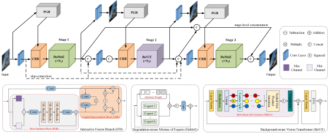 |
Hybrid CNN-Transformer Feature Fusion for Single Image Deraining
Xiang Chen, Jinshan Pan*, Jiyang Lu, Zhentao Fan, Hao Li
AAAI Conference on Artificial Intelligence (AAAI), 2023.
[Paper]
[Code]
|
| 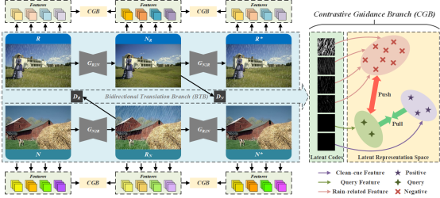 |
Unpaired Deep Image Deraining Using Dual Contrastive Learning
Xiang Chen, Jinshan Pan, Kui Jiang, Yufeng Li*, Yufeng Huang, Caihua Kong, Longgang Dai, Zhentao Fan
IEEE Conference on Computer Vision and Pattern Recognition (CVPR), 2022.
[Paper]
[Code]
|
 |
Unpaired Deep Image Dehazing Using Contrastive Disentanglement Learning
Xiang Chen^, Zhentao Fan^, Pengpeng Li, Longgang Dai, Caihua Kong, Zhuoran Zheng, Yufeng Huang, Yufeng Li*
European Conference on Computer Vision (ECCV), 2022.
[Paper]
[Code]
|
Selected Honors
2022.09-Present (Nanjing University of Science and Technology):
2019.09-2022.06 (Shenyang Aerospace University):
Competition Awards
Fundings
- China Association for Science and Technology Youth Talent Support Engineering Doctoral Program [首批中国科协青年人才托举工程博士生专项计划]
Invited Talks
Professional Services
Area Chair:
- ACM International Conference on Multimedia (ACM MM 2025)
- International Joint Conference on Neural Networks (IJCNN 2025)
Organizer:
Journal Reviewer:
- IEEE Transactions on Pattern Analysis and Machine Intelligence (TPAMI)
- IEEE Transactions on Image Processing (TIP)
- IEEE Transactions on Neural Networks and Learning Systems (TNNLS)
- IEEE Transactions on Multimedia (TMM)
- IEEE Transactions on Circuits and Systems for Video Technology (TCSVT)
- IEEE Transactions on Geoscience and Remote Sensing (TGRS)
- IEEE Transactions on Intelligent Transportation Systems (ITS)
- IEEE Transactions on Industrial Informatics (TII)
- IEEE Journal of Selected Topics in Signal Processing (JSTSP)
- Pattern Recognition (PR)
- Engineering Applications of Artificial Intelligence (EAAI)
- Science China Information Sciences (SCIS)
- Machine Intelligence Research (MIR)
- Computer Vision and Image Understanding (CVIU)
- IEEE Signal Processing Letters (SPL)
- IEEE Geoscience and Remote Sensing Letters (GRSL)
- Scientific Reports
- International Journal of Digital Earth (IJDE)
- Multimedia Systems
- npj Heritage Science
- The Visual Computer (TVCJ)
- The Journal of Supercomputing
- Neural Processing Letters (NPL)
- Machine Vision and Applications
- Optics Communication (Opt Commun)
- Expert Systems with Applications (ESWA)
- Signal, Image and Video Processing (SIVP)
- Journal of Electronic Imaging (JEI)
- Journal of Applied Remote Sensing (JARS)
- Journal of Circuits, Systems, and Computers (JCSC)
- KSII Transactions on Internet and Information Systems
Conference Reviewer:
- IEEE Conference on Computer Vision and Pattern Recognition (CVPR 2022-2026)
- IEEE International Conference on Computer Vision (ICCV 2023, 2025)
- European Conference on Computer Vision (ECCV 2022, 2024)
- International Conference on Machine Learning (ICML 2024-2025)
- Annual Conference on Neural Information Processing Systems (NeurIPS 2023-2025)
- International Conference on Learning Representations (ICLR 2024-2025)
- AAAI Conference on Artificial Intelligence (AAAI 2023-2026)
- International Joint Conference on Artificial Intelligence (IJCAI 2023-2025)
- ACM International Conference on Multimedia (ACM MM 2022-2024)
- Medical Image Computing and Computer-Assisted Intervention (MICCAI 2023-2025)
- European Conference on Artifical Intelligence (ECAI 2024-2025)
- Asian Conference on Computer Vision (ACCV 2022, 2024)
- IEEE Winter Conference on Applications of Computer Vision (WACV 2023-2026)
- International Conference on Artificial Intelligence and Statistics (AISTATS 2025-2026)
- Chinese Conference on Pattern Recognition and Computer Vision (PRCV 2025)

 Welcome to visit our website (底层视觉社区平台) for low-level vision !
Welcome to visit our website (底层视觉社区平台) for low-level vision !